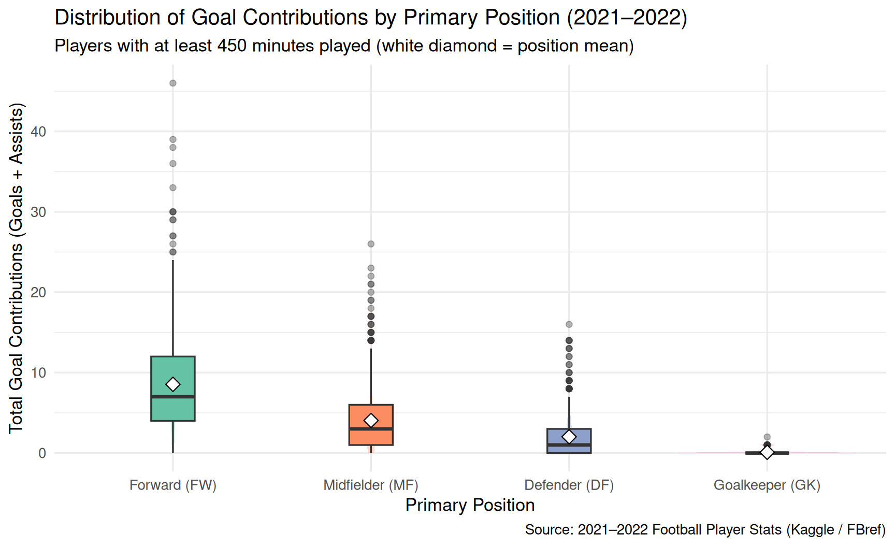
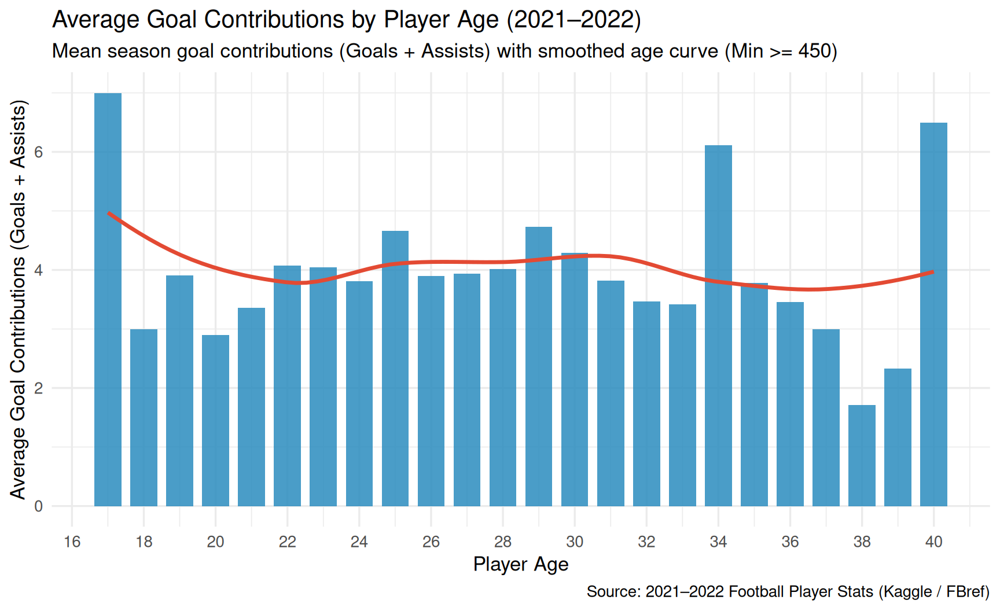

2021–2022 Football Player Goal Contributions by Position and Age
Author
Data Science Student
Code
library(tidyverse)library(plotly)# Load the 2021-2022 Football Player Stats dataset (semicolon-delimited, latin1 encoding)players <-read_delim("2021-2022 Football Player Stats.csv",delim =";",locale =locale(encoding ="latin1"),show_col_types =FALSE) |>filter(!is.na(Age)) |>mutate(# Extract primary position (FW, MF, DF, GK) from hybrid position codesPrimary_Pos =factor(str_sub(Pos, 1, 2),levels =c("FW", "MF", "DF", "GK"),labels =c("Forward (FW)", "Midfielder (MF)", "Defender (DF)", "Goalkeeper (GK)") ),# Goals and Assists in the dataset are per 90 minutes played (90s)Total_Goals =round(Goals *`90s`),Total_Assists =round(Assists *`90s`),Total_GC = Total_Goals + Total_Assists,GC_per_90 =round(Goals + Assists, 2) )
1. Goal Contributions by Position
This graphic compares how total season goal contributions (Goals + Assists) differ across positions. Forwards lead significantly in both median and peak output, followed by midfielders and defenders.
Code
players |>filter(Min >=450) |>ggplot(aes(x = Primary_Pos, y = Total_GC, fill = Primary_Pos)) +geom_violin(alpha =0.35, color =NA, trim =TRUE) +geom_boxplot(width =0.22, outlier.alpha =0.35, color ="gray20") +stat_summary(fun = mean,geom ="point",shape =23,size =3.5,fill ="white",color ="black" ) +scale_fill_brewer(palette ="Set2") +labs(title ="Distribution of Goal Contributions by Primary Position (2021–2022)",subtitle ="Players with at least 450 minutes played (white diamond = position mean)",x ="Primary Position",y ="Total Goal Contributions (Goals + Assists)",caption ="Source: 2021–2022 Football Player Stats (Kaggle / FBref)" ) +theme_minimal(base_size =13) +theme(legend.position ="none")

Figure 1
2. Goal Contributions by Age
This graphic shows how goal contributions vary across player ages. Peak total and average production occurs between ages 23 and 30, with elite veteran outliers continuing to produce in their early-to-mid 30s.
Code
age_summary <- players |>filter(Min >=450) |>summarize(Mean_GC =mean(Total_GC),Median_GC =median(Total_GC),Mean_GC_90 =mean(GC_per_90),Players =n(),.by = Age )ggplot(age_summary, aes(x = Age, y = Mean_GC)) +geom_col(fill ="#2b8cbe", alpha =0.85, width =0.75) +geom_smooth(method ="loess", se =FALSE, color ="#e34a33", linewidth =1.2) +scale_x_continuous(breaks =seq(16, 42, by =2)) +labs(title ="Average Goal Contributions by Player Age (2021–2022)",subtitle ="Mean season goal contributions (Goals + Assists) with smoothed age curve (Min >= 450)",x ="Player Age",y ="Average Goal Contributions (Goals + Assists)",caption ="Source: 2021–2022 Football Player Stats (Kaggle / FBref)" ) +theme_minimal(base_size =13)

Figure 2
3. Interactive Plot: Player Age (Y-Axis) vs. Goal Contributions (X-Axis)
Hover over any point to see the Player, Age, and Goal Contributions (along with their breakdown of goals, assists, squad, and position).
4. Most Efficient Players by Position (Goal Contributions per 90 Minutes)
To measure true efficiency without tiny-sample distortions (such as a substitute scoring once in 10 minutes of play), we examine players with at least 10 full 90-minute matches (90s >= 10, or 900+ minutes) and create separate interactive graphics for each position.
4a. Most Efficient Forwards (FW)
Code
fw_eff <- players |>filter(Primary_Pos =="Forward (FW)", `90s`>=10) |>slice_max(order_by = GC_per_90, n =20, with_ties =FALSE) |>mutate(Player_Label =fct_reorder(paste0(Player, " (", Squad, ")"), GC_per_90),hover_text =paste0("<b>", Player, "</b> (", Squad, ")<br>","Age: ", Age, "<br>","G+A per 90: ", GC_per_90, "<br>","Total Goal Contributions: ", Total_GC," (", Total_Goals, "G, ", Total_Assists, "A)<br>","90s Played: ", `90s` ) ) |>ggplot(aes(x = GC_per_90, y = Player_Label, fill = Age, text = hover_text)) +geom_col() +scale_fill_viridis_c(option ="plasma", end =0.9) +labs(title ="Top 20 Most Efficient Forwards (G+A per 90 Mins)",x ="Goal Contributions per 90 Minutes",y =NULL,fill ="Age" ) +theme_minimal(base_size =11)ggplotly(fw_eff, tooltip ="text")
Figure 4
4b. Most Efficient Midfielders (MF)
Code
mf_eff <- players |>filter(Primary_Pos =="Midfielder (MF)", `90s`>=10) |>slice_max(order_by = GC_per_90, n =20, with_ties =FALSE) |>mutate(Player_Label =fct_reorder(paste0(Player, " (", Squad, ")"), GC_per_90),hover_text =paste0("<b>", Player, "</b> (", Squad, ")<br>","Age: ", Age, "<br>","G+A per 90: ", GC_per_90, "<br>","Total Goal Contributions: ", Total_GC," (", Total_Goals, "G, ", Total_Assists, "A)<br>","90s Played: ", `90s` ) ) |>ggplot(aes(x = GC_per_90, y = Player_Label, fill = Age, text = hover_text)) +geom_col() +scale_fill_viridis_c(option ="viridis", end =0.9) +labs(title ="Top 20 Most Efficient Midfielders (G+A per 90 Mins)",x ="Goal Contributions per 90 Minutes",y =NULL,fill ="Age" ) +theme_minimal(base_size =11)ggplotly(mf_eff, tooltip ="text")
Figure 5
4c. Most Efficient Defenders (DF)
Code
df_eff <- players |>filter(Primary_Pos =="Defender (DF)", `90s`>=10) |>slice_max(order_by = GC_per_90, n =20, with_ties =FALSE) |>mutate(Player_Label =fct_reorder(paste0(Player, " (", Squad, ")"), GC_per_90),hover_text =paste0("<b>", Player, "</b> (", Squad, ")<br>","Age: ", Age, "<br>","G+A per 90: ", GC_per_90, "<br>","Total Goal Contributions: ", Total_GC," (", Total_Goals, "G, ", Total_Assists, "A)<br>","90s Played: ", `90s` ) ) |>ggplot(aes(x = GC_per_90, y = Player_Label, fill = Age, text = hover_text)) +geom_col() +scale_fill_viridis_c(option ="mako", end =0.85) +labs(title ="Top 20 Most Efficient Defenders (G+A per 90 Mins)",x ="Goal Contributions per 90 Minutes",y =NULL,fill ="Age" ) +theme_minimal(base_size =11)ggplotly(df_eff, tooltip ="text")
Figure 6
4d. Interactive Efficiency Explorer by Age and Position
This interactive graphic lets you compare player efficiency (G+A per 90) across every Age and Position simultaneously.